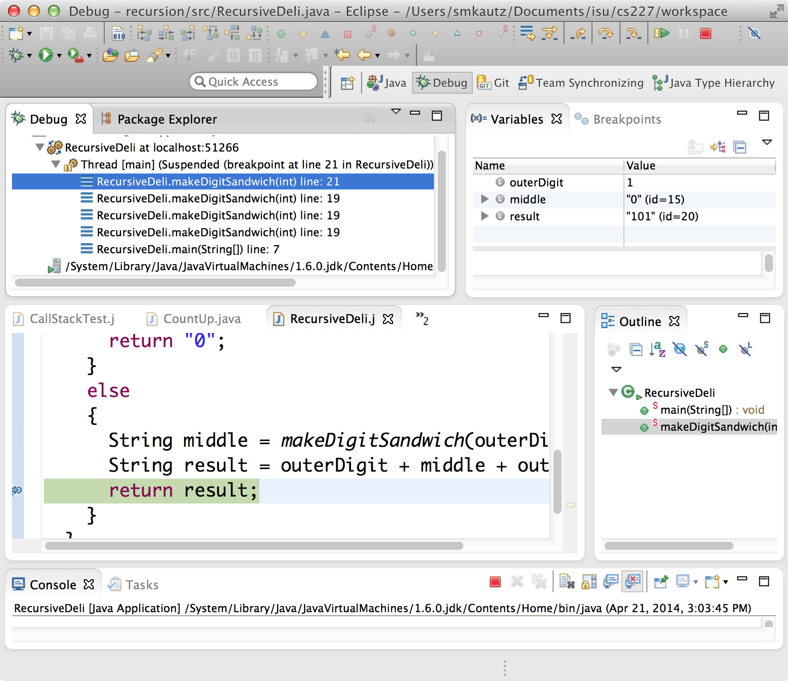

Recursion
Recursion is simply the act of a method calling itself in order to solve a problem. It requires no new Java constructs -- just a little bit of alternative thinking!
Consider the silly problem of trying to programmatically compose a string such as 9876543210123456789. Let's call this a digit sandwich. Our goal is to complete a method
public static String makeDigitSandwich(int outerDigit)
{
// TODO
}
Sure, you could do this with a couple of loops. But let's think about it differently. By far the easiest way to make a digit sandwich with an outer digit of 9 is to have someone else make you a digit sandwich with outer digit 8. Then you can easily concatenate a "9" before and after it:
return "9" + (digit sandwich with outer digit 8) + "9"
Where do you get a digit sandwich with outer digit 8? Easy. All you need is a digit sandwich with outer digit 7:
return "8" + (digit sandwich with outer digit 7) + "8"
More generally, to make a digit sandwich with outer digit d, you just need a digit sandwich with outer digit d - 1:
return d + (digit sandwich with outer digit d - 1) + d
So, in order to write the method makeDigitSandwich, we just need to call a method that will make a slightly smaller digit sandwich.
The amazing thing is that we can actually call the
makeDigitSandwich method that we are writing.
public class RecursiveDeli
{
public static void main(String[] args)
{
String result = makeDigitSandwich(4);
System.out.println(result);
}
public static String makeDigitSandwich(int outerDigit)
{
if (outerDigit == 0)
{
// Base case
return "0";
}
else
{
// Recursive case
String middle = makeDigitSandwich(outerDigit - 1);
String result = outerDigit + middle + outerDigit;
return result;
}
}
}
The key to getting away with this is you can't go on forever asking for smaller and smaller digit sandwiches. Eventually you'll ask for a sandwich with outer digit zero, and then there's no more work to do - you can just return "0". This is called the
base case. The alternative, in which makeDigitSandwich calls makeDigitSandwich with a smaller value, is called the recursive case.
Visualizing execution with Eclipse
Run the code above in Eclipse. Then, put a breakpoint on the second "return" statement and run it in Debug mode. You should see something like this:
In the Debug Pane, you can see that there are multiple calls to
makeDigitSandwich on the call stack.
Each time we reach the line
String middle = makeDigitSandwich(outerDigit - 1);
a new frame is created for the call to makeDigitSandwich. In that frame are the local variables within that method call, such as outerDigit and result. The frame is added to the call stack, which keeps track of which method call is currently being executed.
Click on the lowest call to makeDigitSandwich. Notice in the variables pane that the local variable outerDigit has value 4. Then click on the next one up; notice that
outerDigit has value 3. That is,
makeDigitSandwich(4) has called makeDigitSandwich(3), which called makeDigitSandwich(2), which called makeDigitSandwich(1), which called makeDigitSandwich(0). If you click on the topmost frame, you can see that the call to
makeDigitSandwich(0) has returned the string "0", and the method
is about to return the sandwich "101".
Next, use the F6 key (or the Step Over button) to execute through the rest of the code. Each time the return statement is executed, the call finishes and we end up in the previous frame with a slightly larger digit sandwich stored in the local variable middle.